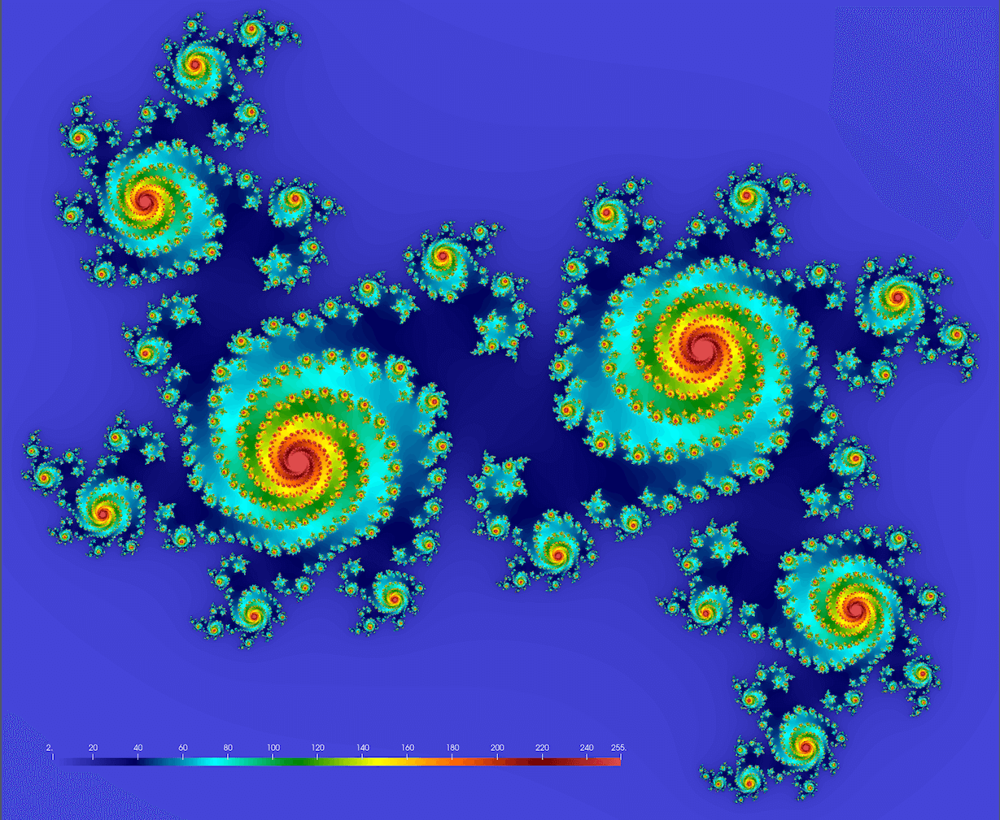

Parallelizing the Julia set with Base.Threads
The project is the mathematical problem to compute a Julia set – no relation to Julia language! A Julia set is defined as a set of points on the complex plane that remain bound under infinite recursive transformation \(f(z)\). We will use the traditional form \(f(z)=z^2+c\), where \(c\) is a complex constant. Here is our algorithm:
- pick a point \(z_0\in\mathbb{C}\)
- compute iterations \(z_{i+1}=z_i^2+c\) until \(|z_i|>4\) (arbitrary fixed radius; here \(c\) is a complex constant)
- store the iteration number \(\xi(z_0)\) at which \(z_i\) reaches the circle \(|z|=4\)
- limit max iterations at 255
4.1 if \(\xi(z_0)=255\), then \(z_0\) is a stable point
4.2 the quicker a point diverges, the lower its \(\xi(z_0)\) is - plot \(\xi(z_0)\) for all \(z_0\) in a rectangular region \(-1<=\mathfrak{Re}(z_0)<=1\), \(-1<=\mathfrak{Im}(z_0)<=1\)
We should get something conceptually similar to this figure (here \(c = 0.355 + 0.355i\); we’ll get drastically different fractals for different values of \(c\)):

You might want to try these values too:
\(c = 1.2e^{1.1πi}\) \(~\Rightarrow~\) original textbook example
\(c = -0.4-0.59i\) and 1.5X zoom-out \(~\Rightarrow~\) denser spirals
\(c = 1.34-0.45i\) and 1.8X zoom-out \(~\Rightarrow~\) beans
\(c = 0.34-0.05i\) and 1.2X zoom-out \(~\Rightarrow~\) connected spiral boots
Below is the serial code juliaSetSerial.jl. If you are running Julia on your own computer, make sure you have the required packages:
] add BenchmarkTools
] add PlotsLet’s study the code:
using BenchmarkTools
function pixel(z)
c = 0.355 + 0.355im
z *= 1.2 # zoom out
for i = 1:255
z = z^2 + c
if abs(z) >= 4
return i
end
end
return 255
end
const height, width = repeat([2_000],2) # 2000^2 image
println("Computing Julia set ...")
const stability = zeros(Int32, height, width);
@btime for i in 1:height, j in 1:width
point = (2*(j-0.5)/width-1) + (2*(i-0.5)/height-1)im # rescale to -1:1 in the complex plane
stability[i,j] = pixel(point)
end
println("Plotting to PNG ...")
using Plots
gr() # initialize the gr backend
ENV["GKSwstype"] = "100" # operate in headless mode
fname = "$(height)x$(width)"
png(heatmap(stability, size=(width,height), color=:gist_ncar), fname)Let’s run this code with julia juliaSetSerial.jl. On my laptop it reports 931.024 ms.
Without the two const keywords the code will slow down to 1.599 s on the same laptop. This shows the importance of insuring type stability in Julia: for these global variables making their type constant allows Julia not to check their type inside the loop @btime for i in 1:height, j in 1:width at runtime, making the code run faster. Note that making the array stability constant simply insures that its type will not change; its elements are still mutable and can be assigned values. An alternative solution would be to package this loop into a function where all variables are already local with a known, pre-compiled type:
function juliaSet(height, width)
stability = zeros(Int32, height, width);
for i in 1:height, j in 1:width
point = (2*(j-0.5)/width-1) + (2*(i-0.5)/height-1)im # rescale to -1:1 in the complex plane
stability[i,j] = pixel(point)
end
end
println("Computing Julia set ...")
@btime juliaSet(2000, 2000)Built-in plotting in Julia is fairly slow and will take forever for drawing much larger fractals (e.g. \(8000^2\)). A faster alternative is to save your plot as compressed NetCDF and visualize it with something faster, e.g. ParaView. The code for this is below. Note that as of February 2022 Julia’s NetCDF library does not yet work on Apple’s M1 processors.
println("Writing NetCDF ...")
using NetCDF
filename = "test.nc"
isfile(filename) && rm(filename)
nccreate(filename, "stability", "x", collect(1:height), "y", collect(1:width), t=NC_INT, mode=NC_NETCDF4, compress=9);
ncwrite(stability, filename, "stability");This code will produce the file test.nc that you can download to your computer and render with ParaView or other visualization tool.
Try one of these:
1. With NetCDF output, compare the expected and actual file sizes.
2. Try other values of the parameter \(c\) (see above).
3. Increase the problem size from the default \(2000^2\). Will you have enough physical memory for \(8000^2\)? How does this affect the runtime?
If computing takes forever, recall that @btime runs the code multiple times, while @time does it only once. Also, you might like a progress bar inside the terminal:
using ProgressMeter
@showprogress <for loop>Parallelizing
- Load Base.Threads.
- Add
@threadsbefore the outer loop, and time this parallel loop.
On my laptop with 8 threads the timing is 193.942 ms (4.8X speedup) which is good but not great – certainly worse than linear speedup … The speedup on the training cluster is not great either. There could be several potential problems:
- False sharing effect (cache issues with multiple threads writing into adjacent array elements).
- Less than perfect load balancing between different threads.
- Row-major vs. column-major loop order for filling in the
stabilityarray. - Some CPU cores are lower efficiency, and they are slowing down the whole calculation.
How would you fix this issue? If you manage to get close to 100% parallel efficiency with Base.Threads on multiple cores, we would love to see your solution! Please only check the solution once you have worked on the problem yourself.
Build a 3D cube based on the Julia set where the 3rd axis would be a slowly varying c constant. For example, try to interpolate linearly between \(c = 0.355 + 0.355i\) and \(c = 1.34-0.45i\), or between any other two complex values. Send us an animation traversing your volume once you are done. What highest cube resolution could you compute?
You can also generate a truly 3D fractal in Julia. Check out this dataset which was computed in Julia and visualized in ParaView (both on a laptop).